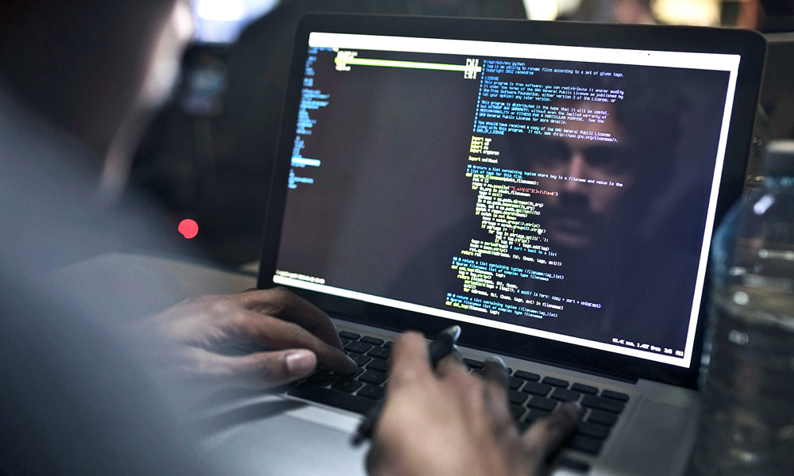
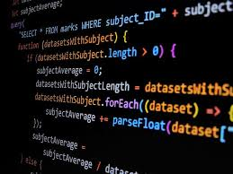
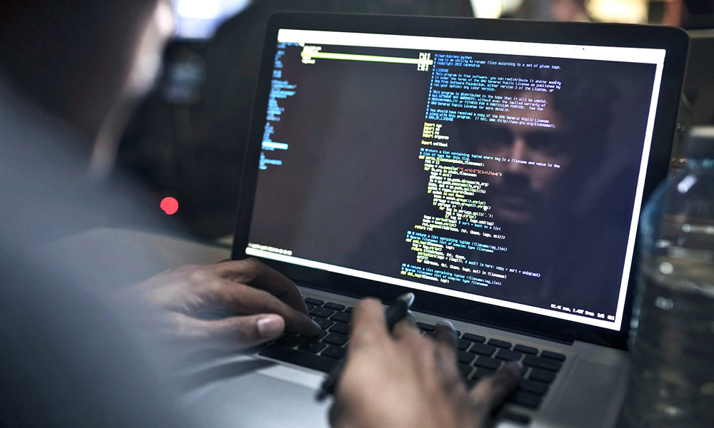
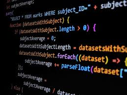
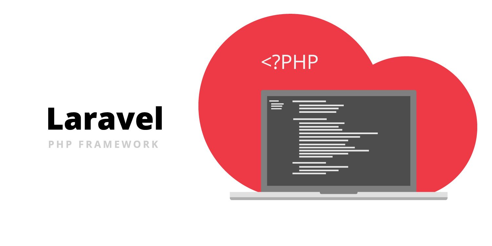

|
KATEGORI
LINK FAVORITE  



|

Apa Itu Laravel?Laravel merupakan framework PHP yang open-source dan berisi banyak modul dasar untuk mengoptimalkan kinerja PHP dalam pengembangan aplikasi web, apalagi PHP adalah bahasa pemrograman yang dinamis dan Laravel disini bisa bertindak untuk membuat web development lebih cepat, lebih aman, dan lebih simpel. Laravel memberikan seperangkat alat dan sumber daya untuk membangun aplikasi berbasis PHP. Laravel memiliki ekosistem yang lengkap didukung oleh package dan ekstensi yang kompatibel. Laravel telah tumbuh pesat dan semakin besar dalam beberapa tahun terakhir. Hal ini juga ditunjukan dengan semakin besarnya minat developer untuk menggunakan framework Laravel karena dapat menyederhanakan pengembangan aplikasi. Framework ini diluncurkan pada tanggal 9 Juni 2011 oleh Taylor Otwell. Awalnya tujuan dari Laravel adalah sebagai alternatif dari Codelgniter. Taylor Otwell melihat bahwa framework PHP lainnya yaitu Codelgniter belum menyediakan fitur tertentu seperti dukungan bawaan untuk otentikasi dan otorisasi pengguna. Sejak saat itu Laravel sudah mengeluarkan berbagai pembaruan dan penambahan fitur. Saat ini laravel sudah sampai ke versi 9 dengan berbagai fitur unggulan.  |
| UTS Pemrograman Web © Novri Ramadhianti - 2023 | |